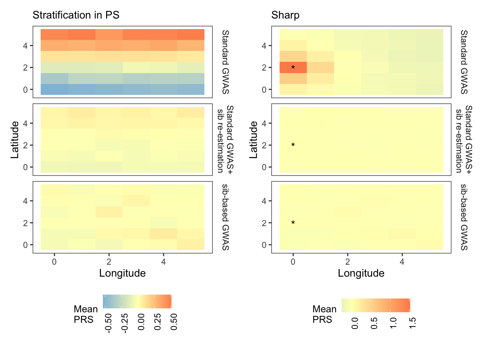
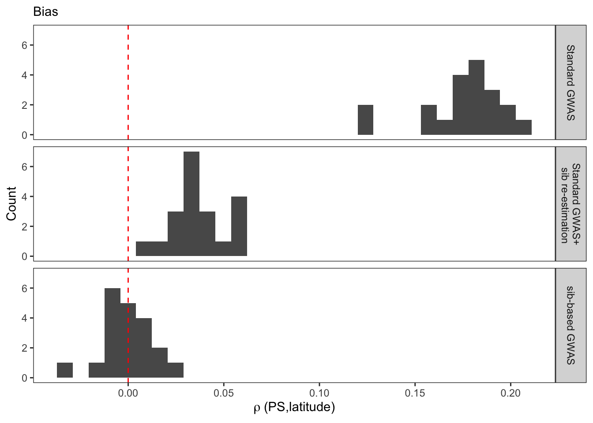
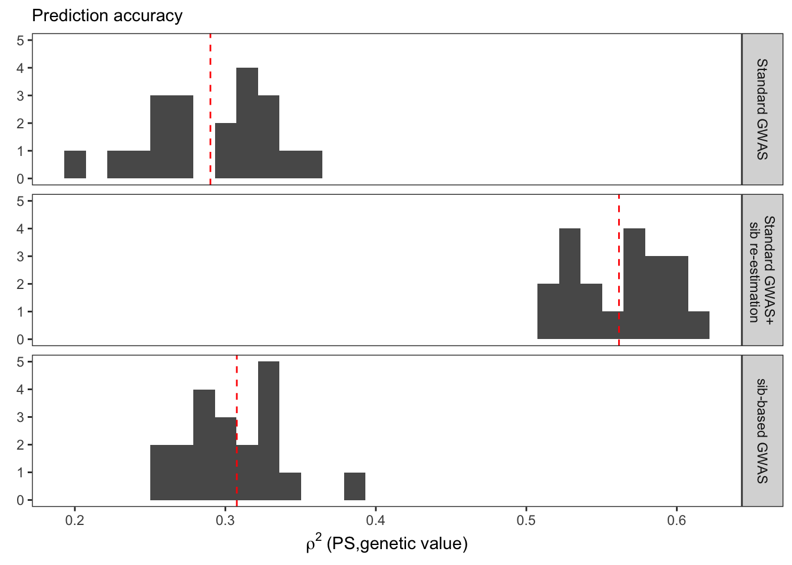
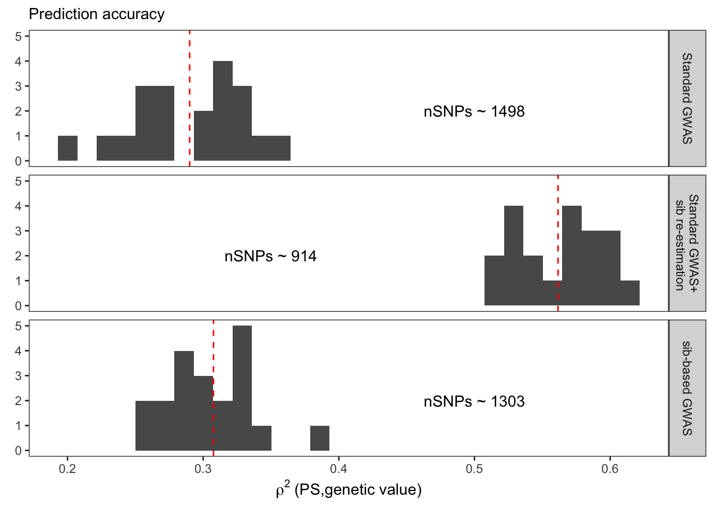
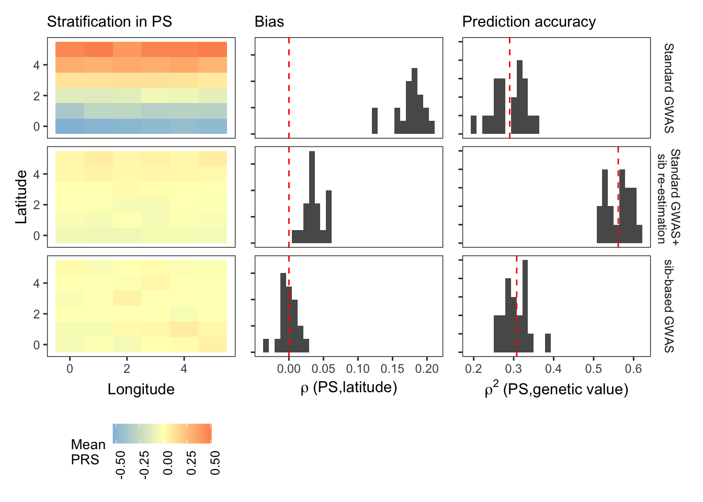

Last updated: 2020-12-22
Checks: 6 1
Knit directory: popstruct_scripts/
This reproducible R Markdown analysis was created with workflowr (version 1.6.2). The Checks tab describes the reproducibility checks that were applied when the results were created. The Past versions tab lists the development history.
The R Markdown is untracked by Git. To know which version of the R Markdown file created these results, you’ll want to first commit it to the Git repo. If you’re still working on the analysis, you can ignore this warning. When you’re finished, you can run wflow_publish to commit the R Markdown file and build the HTML.
Great job! The global environment was empty. Objects defined in the global environment can affect the analysis in your R Markdown file in unknown ways. For reproduciblity it’s best to always run the code in an empty environment.
The command set.seed(20201202) was run prior to running the code in the R Markdown file. Setting a seed ensures that any results that rely on randomness, e.g. subsampling or permutations, are reproducible.
Great job! Recording the operating system, R version, and package versions is critical for reproducibility.
Nice! There were no cached chunks for this analysis, so you can be confident that you successfully produced the results during this run.
Great job! Using relative paths to the files within your workflowr project makes it easier to run your code on other machines.
Great! You are using Git for version control. Tracking code development and connecting the code version to the results is critical for reproducibility.
The results in this page were generated with repository version 99813ec. See the Past versions tab to see a history of the changes made to the R Markdown and HTML files.
Note that you need to be careful to ensure that all relevant files for the analysis have been committed to Git prior to generating the results (you can use wflow_publish or wflow_git_commit). workflowr only checks the R Markdown file, but you know if there are other scripts or data files that it depends on. Below is the status of the Git repository when the results were generated:
Ignored files:
Ignored: .DS_Store
Ignored: .Rproj.user/
Ignored: Archived/
Ignored: analysis/.DS_Store
Ignored: burden_msprime/.DS_Store
Ignored: burden_msprime/generate_burden/.DS_Store
Ignored: data/.DS_Store
Ignored: data/burden_msprime/
Ignored: data/burden_msprime2/
Ignored: data/gwas/
Ignored: data/ukmap/
Ignored: gwas/.DS_Store
Ignored: gwas/grid/.DS_Store
Ignored: gwas/grid/tau-9/.DS_Store
Ignored: gwas/grid/tau-9/scripts/.DS_Store
Ignored: gwas/grid/tau-9/scripts/generate_genotypes/.DS_Store
Ignored: gwas/grid/tau-9/scripts/gwas/.DS_Store
Ignored: gwas/grid/tau100/.DS_Store
Ignored: gwas/grid/tau100/scripts/.DS_Store
Ignored: gwas/grid/tau100/scripts/generate_genotypes/.DS_Store
Ignored: gwas/grid/tau100/scripts/gwas/.DS_Store
Ignored: gwas/ukb/.DS_Store
Ignored: gwas/ukb/scripts/.DS_Store
Ignored: optimize_migration_rate/.DS_Store
Ignored: optimize_migration_rate/complex_dem/.DS_Store
Ignored: optimize_migration_rate/grid/.DS_Store
Ignored: output/plots/
Ignored: pca_plots/.DS_Store
Ignored: prs/.DS_Store
Ignored: prs/grid/.DS_Store
Ignored: qqplots/.DS_Store
Ignored: qqplots/fixed_effects/.DS_Store
Ignored: qqplots/lmms/.DS_Store
Ignored: revisions/.DS_Store
Ignored: shared_scripts/gwas/
Ignored: shared_scripts/prs/
Ignored: shared_scripts/simphenotype/
Ignored: sib_analysis/.DS_Store
Ignored: sib_analysis/complex_dem/.DS_Store
Ignored: sib_analysis/grid/.DS_Store
Ignored: sib_analysis/grid/tau100/mates/
Ignored: simulating_genotypes/.DS_Store
Ignored: simulating_genotypes/grid/.DS_Store
Ignored: simulating_phenotypes/.DS_Store
Untracked files:
Untracked: analysis/biasvaccuracy_prsascertainment.Rmd
Untracked: analysis/biasvaccuracy_prsascertainment.nb.html
Untracked: analysis/plotting_prs_sib_effects.Rmd
Untracked: analysis/plotting_prs_sib_effects.nb.html
Untracked: analysis/plottingprs_distribution_gridt.Rmd
Untracked: analysis/plottingprs_distribution_gridt.nb.html
Untracked: analysis/plt_burden_association.Rmd
Untracked: analysis/plt_ukb_unrelated_prs.Rmd
Untracked: analysis/plt_ukb_unrelated_prs.nb.html
Untracked: analysis/prs_wt_finemapping.Rmd
Untracked: analysis/prs_wt_finemapping.nb.html
Unstaged changes:
Modified: analysis/_site.yml
Modified: analysis/index.Rmd
Modified: burden_msprime/plt_burden_association_t100.Rmd
Modified: burden_msprime/plt_burden_association_t100.nb.html
Deleted: revisions/figuring_out_prediction_accuracy.Rmd
Deleted: revisions/figuring_out_prediction_accuracy.nb.html
Deleted: revisions/figuring_out_prediction_accuracy2.Rmd
Deleted: revisions/figuring_out_prediction_accuracy2.nb.html
Note that any generated files, e.g. HTML, png, CSS, etc., are not included in this status report because it is ok for generated content to have uncommitted changes.
There are no past versions. Publish this analysis with wflow_publish() to start tracking its development.
We know that GWAS in sibs is unaffected by population stratification. We were interested in testing whether ascertaining SNPs in a GWAS of unrelated individuals and then re-estimating effect sizes in sibs results in residual stratification in the PRS. To test this, I constructed sibling haplotypes fro the ‘test set’ genotypes either by randomly pairing haplotypes in the population or pairing them within each deme (assortative) and then carried out a GWAS using the difference in the phenotype of sibs as the response and the difference in genotype as the predictor. The simulated phenotypes were constructed either with smooth (latitude) or sharp environmental effects (ran random and smooth (longitude) environment also but results not shown here). Then, I constructed PRS in an independent (third set) using sib effect sizes for variants ascertained in two different ways:
The hypothesis is that the PRS generated from effect sizes from (2) would still capture some residual population stratification because these SNPs are likely to be more structured.
library(ggplot2)
library(dplyr)
Attaching package: 'dplyr'The following objects are masked from 'package:stats':
filter, lagThe following objects are masked from 'package:base':
intersect, setdiff, setequal, unionlibrary(data.table)
Attaching package: 'data.table'The following objects are masked from 'package:dplyr':
between, first, lastlibrary(rprojroot)
library(patchwork)
#specify root of the directory
F = is_rstudio_project$make_fix_file()Load genetic values for each individual. We need to subtract these out to look at the residual stratification in polygenic scores.
gvalues = fread(F("data/gwas/grid/genotypes/tau100/ss500/test/gvalue/genos_grid_d36_m0.05_s500_t100.rmdup.test.all.gvalue.sscore.gz"))
colnames(gvalues) = c("rep","IID","dosage","gvalue")Load polygenic scores for smooth and sharp effect.
#load the prs for smooth effect
sm.gwas = fread(F("data/gwas/grid/genotypes/tau100/ss500/test/prs/gridt100_prs_smooth.all.nc.sscore.gz"))
sm.asc = fread(F("data/gwas/grid/genotypes/tau100/ss500/test/sibs_prs/gridt100_prs_psmooth.asc.nc.sscore.gz"))
sm.unasc = fread(F("data/gwas/grid/genotypes/tau100/ss500/test/sibs_prs/gridt100_prs_psmooth.all.sscore.gz"))
#load prs for sharp effect
shp.gwas = fread(F("data/gwas/grid/genotypes/tau100/ss500/test/prs/gridt100_prs_sharp.all.nc.sscore.gz"))
shp.asc = fread(F("data/gwas/grid/genotypes/tau100/ss500/test/sibs_prs/gridt100_prs_psharp.asc.nc.sscore.gz"))
shp.unasc = fread(F("data/gwas/grid/genotypes/tau100/ss500/test/sibs_prs/gridt100_prs_psharp.all.sscore.gz"))
colnames(sm.gwas) = colnames(shp.gwas) = c("rep","IID","dosage","pcs0","cm","re","cmre")
colnames(sm.asc) = colnames(shp.asc) = c("rep","IID","dosage","pcs0","cm","re","cmre")
colnames(shp.unasc) = colnames(sm.unasc) = c("rep","IID","dosage","causal","causal_p","lead_snp")
sm.gwas = sm.gwas %>%
select(rep,IID,pcs0)
shp.gwas = shp.gwas %>%
select(rep,IID,pcs0)
sm.asc = sm.asc%>%
select(rep,IID,pcs0)
shp.asc = shp.asc%>%
select(rep,IID,pcs0)
sm.unasc = sm.unasc%>%
select(rep,IID,lead_snp)
shp.unasc = shp.unasc%>%
select(rep,IID,lead_snp)
#rbind all so we can plot together
sm.asc$phenotype = sm.unasc$phenotype = sm.gwas$phenotype = "Smooth"
shp.asc$phenotype = shp.unasc$phenotype = shp.gwas$phenotype = "Sharp"
sm.gwas$ascertainment = shp.gwas$ascertainment = "gwas_only"
sm.asc$ascertainment = shp.asc$ascertainment = "gwas_sib"
sm.unasc$ascertainment = shp.unasc$ascertainment = "sib_only"
colnames(sm.asc)[3] = colnames(shp.asc)[3] = colnames(sm.unasc)[3] = colnames(shp.unasc)[3] = colnames(sm.gwas)[3] =
colnames(shp.gwas)[3] = "prs"
sm = rbind(sm.gwas,sm.asc,sm.unasc)
shp = rbind(shp.gwas,shp.asc,shp.unasc)Load ‘pop’ file which contains info on each individual’s x,y coordinates and add this info to the polygenic scores. Then subtract out genetic values and calculate the mean polygenic score per deme.
pop = fread(F("data/gwas/grid/genotypes/tau100/ss500/iid_test.txt"))
sm = merge(sm, pop, by="IID")
shp = merge(shp, pop,by="IID")
#add simulated genetic values
sm = merge(sm, gvalues, by=c("rep","IID"))
shp = merge(shp, gvalues, by=c("rep","IID"))
#remove variation due to simulated genetic value
#also calculate the correlation between prs and longitude/latitude
prs_sm = sm%>%
group_by(rep,ascertainment,phenotype)%>%
mutate(prs = prs-gvalue)%>%
ungroup()
prs_shp = shp%>%
group_by(rep,ascertainment,phenotype)%>%
mutate(prs = prs-gvalue)%>%
ungroup()
#average prs per deme
prs_sm.mean = prs_sm%>%
group_by(rep,phenotype,ascertainment)%>%
mutate(prs = prs - mean(prs) )%>%
ungroup()%>%
group_by(longitude,latitude,ascertainment)%>%
summarize(prs=mean(prs))%>%
ungroup()`summarise()` regrouping output by 'longitude', 'latitude' (override with `.groups` argument)prs_shp.mean = prs_shp%>%
group_by(rep,phenotype,ascertainment)%>%
mutate(prs = prs - mean(prs) )%>%
ungroup()%>%
group_by(longitude,latitude,ascertainment)%>%
summarize(prs=mean(prs))%>%
ungroup()`summarise()` regrouping output by 'longitude', 'latitude' (override with `.groups` argument)#generate the plots
labels_prs=c(
gwas_only="Standard GWAS",
gwas_sib="Standard GWAS+\n sib re-estimation",
sib_only="sib-based GWAS"
)Plot residual polygenic scores for the smooth effect.
#plot for smooth effect
prs_midpoint_sm = prs_sm.mean%>%
pull(prs)%>%
mean()
plt_smooth = ggplot(prs_sm.mean,
aes(longitude,latitude,fill=prs))+
geom_tile()+
facet_grid(ascertainment~.,
labeller=as_labeller(labels_prs))+
theme_bw()+
scale_fill_gradient2(high = "#fc8d59",
mid = "#ffffbf",
low = "#91bfdb",
midpoint = prs_midpoint_sm)+
labs(x="Longitude", y="Latitude", title="Stratification in PS", fill="Mean\nPRS")+
theme(plot.title=element_text(hjust=0,size=11),
strip.text = element_text(size=9),
panel.grid = element_blank(),
legend.text = element_text(size=9,angle=90,hjust=1),
legend.title = element_text(size=10),
legend.key.size = unit(5, "mm"),
legend.position="bottom",
legend.background = element_blank(),
plot.background = element_blank(),
strip.background = element_blank())Plot polygenic scores for sharp effect.
#plot for sharp effect
prs_midpoint_shp = prs_shp.mean%>%
pull(prs)%>%
mean()
plt_sharp = ggplot(prs_shp.mean,
aes(longitude,latitude,fill=prs))+
geom_tile()+
facet_grid(ascertainment~.,
labeller=as_labeller(labels_prs))+
annotate(geom="text",x=0,y=2,label="*",vjust=0.7)+
theme_bw()+
scale_fill_gradient2(high = "#fc8d59",
mid = "#ffffbf",
low = "#91bfdb",
midpoint = prs_midpoint_sm)+
labs(x="Longitude", y="Latitude", title="Sharp", fill="Mean\nPRS")+
theme(plot.title=element_text(hjust=0,size=11),
strip.text = element_text(size=9),
panel.grid = element_blank(),
legend.text = element_text(size=9,angle=90,hjust=1),
legend.title = element_text(size=10),
legend.key.size = unit(5, "mm"),
legend.position="bottom",
legend.background = element_blank(),
plot.background = element_blank(),
strip.background = element_blank())
#save the sharp plot for the supplement
# ggsave(F("plots/prs/grid/plt_prs_gridt100_sharp_sib.pdf"),
# plt_sharp,
# height=150,
# width=90,
# units="mm")
plt_smooth + plt_sharp
Plot the correlation between latitude and the smooth PRS
prs_sm.cor = prs_sm %>%
group_by(rep,ascertainment)%>%
summarize(rlat = cor(latitude,prs))%>%
ungroup()`summarise()` regrouping output by 'rep' (override with `.groups` argument)plt_sm.cor=ggplot(prs_sm.cor,aes(rlat))+
geom_histogram()+
facet_grid(ascertainment~.,
labeller = as_labeller(labels_prs))+
theme_bw()+
theme(panel.grid = element_blank(),
plot.title=element_text(hjust=0,size=11))+
labs(x = bquote(rho~"(PS,latitude)"),
y = "Count",
title="Bias")+
geom_vline(xintercept=0,color="red",linetype="dashed")
plt_sm.cor`stat_bin()` using `bins = 30`. Pick better value with `binwidth`.
Plot the correlation between polygenic score and true genetic value
sm.r2 = sm%>%
group_by(rep,ascertainment)%>%
summarize(r2=cor(prs,gvalue)^2)`summarise()` regrouping output by 'rep' (override with `.groups` argument)sm.r2.mean = sm.r2%>%
group_by(ascertainment)%>%
summarize(mean.r2 = mean(r2))`summarise()` ungrouping output (override with `.groups` argument)#generate the plots
labels_prs=c(
gwas_only="Standard GWAS",
gwas_sib="Standard GWAS+\n sib re-estimation",
sib_only="sib-based GWAS"
)
plt_sm.corgvalue=ggplot(sm.r2,aes(r2))+
geom_histogram(position="identity")+
geom_vline(data=sm.r2.mean,aes(xintercept=mean.r2),
linetype="dashed",
color="red")+
facet_grid(ascertainment~.,
labeller = as_labeller(labels_prs))+
theme_bw()+
theme(panel.grid = element_blank(),
plot.title=element_text(hjust=0,size=11))+
labs(x = bquote(rho^2~"(PS,genetic value)"),
y = element_blank(),
title="Prediction accuracy")
plt_sm.corgvalue`stat_bin()` using `bins = 30`. Pick better value with `binwidth`.
Let’s add number of variants used in PRS calculation to each plot.
#variants ascertained in GWAS
betas.gwas = fread(F("data/gwas/grid/genotypes/tau100/ss500/train/betas/est_effects.all.smooth.nc.betas"))
colnames(betas.gwas)=c("rep","SNP","allele","pcs0","cm","re","cmre")
#calculate no. of sNPs ascertained in GWAS
betas.gwas.n = betas.gwas%>%
select(rep,SNP,pcs0)%>%
group_by(rep)%>%
summarize(nsnps = length(which(pcs0!=0)))%>%
mutate(ascertainment = "gwas_only")`summarise()` ungrouping output (override with `.groups` argument)#variants ascertained in siblings
betas.sibs = fread(F("data/gwas/grid/genotypes/tau100/ss500/sibs/betas/est_effects.psmooth.eall.all.betas"))
colnames(betas.sibs)=c("rep","SNP","allele","causal","causal.p","lead.snp")
#calculate no. of sNPs ascertained in siblings with nonzero effects
betas.sibs.n = betas.sibs%>%
select(rep,SNP,causal,lead.snp)%>%
group_by(rep)%>%
summarize(nsnps = length(which(lead.snp!=0)))%>%
mutate(ascertainment = "sib_only")`summarise()` ungrouping output (override with `.groups` argument)#variants ascertained in GWAS but re-estimated in siblings
betas.asc = fread(F("data/gwas/grid/genotypes/tau100/ss500/sibs/betas/est_effects.psmooth.eall.asc.nc.betas"))
colnames(betas.asc)=c("rep","SNP","allele","pcs0","cm","re","cmre")
#calculate no. of sNPs ascertained in GWAS with nonzero sib effects
betas.asc.n = betas.asc%>%
select(rep,SNP,pcs0)%>%
group_by(rep)%>%
summarize(nsnps = length(which(pcs0!=0)))%>%
mutate(ascertainment = "gwas_sib")`summarise()` ungrouping output (override with `.groups` argument)betas.n = rbind(betas.gwas.n,betas.asc.n,betas.sibs.n)
betas.n = betas.n %>%
group_by(ascertainment)%>%
summarize(nsnps = round(mean(nsnps)))`summarise()` ungrouping output (override with `.groups` argument)betas.n = betas.n %>%
mutate(x = case_when(ascertainment %in% c("gwas_only",
"sib_only")~0.5,
TRUE~0.35),
y = 2)
plt_sm.corgvalue.n = plt_sm.corgvalue +
geom_text(data=betas.n,
aes(x,y,label=paste("nSNPs ~",
nsnps,sep=" ")))
plt_sm.corgvalue.n`stat_bin()` using `bins = 30`. Pick better value with `binwidth`.
Make a combined plot
combined_plt2 = (plt_smooth + theme(strip.text.y = element_blank())) +
(plt_sm.cor + theme(axis.text.y = element_blank(),
axis.title.y = element_blank(),
strip.background = element_blank(),
strip.text = element_blank()))+
(plt_sm.corgvalue + theme(axis.text.y = element_blank(),
axis.title.y = element_blank(),
strip.background = element_blank()))
# ggsave(F("plots/prs/grid/plt_prs_gridt100_sib.pdf"),
# combined_plt2,
# height=150,
# width=180,
# units="mm")
combined_plt2`stat_bin()` using `bins = 30`. Pick better value with `binwidth`.
`stat_bin()` using `bins = 30`. Pick better value with `binwidth`.
sessionInfo()R version 4.0.3 (2020-10-10)
Platform: x86_64-apple-darwin17.0 (64-bit)
Running under: macOS Catalina 10.15.7
Matrix products: default
BLAS: /Library/Frameworks/R.framework/Versions/4.0/Resources/lib/libRblas.dylib
LAPACK: /Library/Frameworks/R.framework/Versions/4.0/Resources/lib/libRlapack.dylib
locale:
[1] en_US.UTF-8/en_US.UTF-8/en_US.UTF-8/C/en_US.UTF-8/en_US.UTF-8
attached base packages:
[1] stats graphics grDevices utils datasets methods base
other attached packages:
[1] patchwork_1.0.1 rprojroot_1.3-2 data.table_1.13.2 dplyr_1.0.2
[5] ggplot2_3.3.2 workflowr_1.6.2
loaded via a namespace (and not attached):
[1] Rcpp_1.0.5 pillar_1.4.6 compiler_4.0.3 later_1.1.0.1
[5] git2r_0.27.1 R.methodsS3_1.8.1 R.utils_2.10.1 tools_4.0.3
[9] digest_0.6.27 evaluate_0.14 lifecycle_0.2.0 tibble_3.0.4
[13] gtable_0.3.0 pkgconfig_2.0.3 rlang_0.4.8 rstudioapi_0.11
[17] yaml_2.2.1 xfun_0.19 withr_2.3.0 stringr_1.4.0
[21] knitr_1.30 generics_0.1.0 fs_1.5.0 vctrs_0.3.4
[25] grid_4.0.3 tidyselect_1.1.0 glue_1.4.2 R6_2.5.0
[29] rmarkdown_2.5 farver_2.0.3 purrr_0.3.4 magrittr_1.5
[33] backports_1.1.10 scales_1.1.1 promises_1.1.1 ellipsis_0.3.1
[37] htmltools_0.5.0 colorspace_1.4-1 httpuv_1.5.4 labeling_0.4.2
[41] stringi_1.5.3 munsell_0.5.0 crayon_1.3.4 R.oo_1.24.0